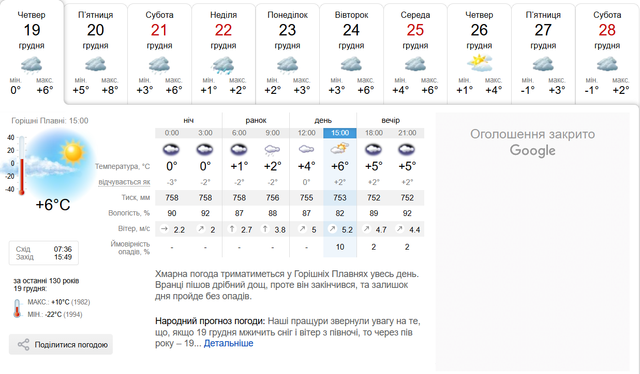
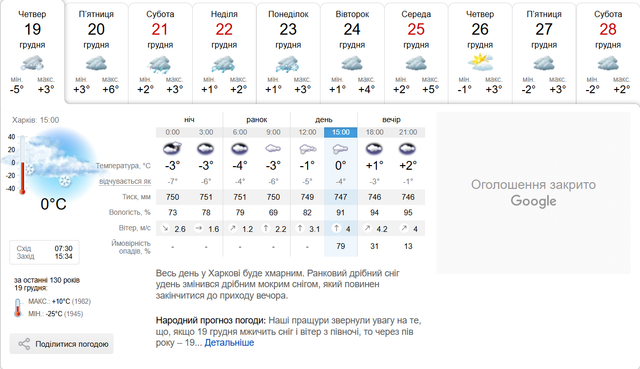
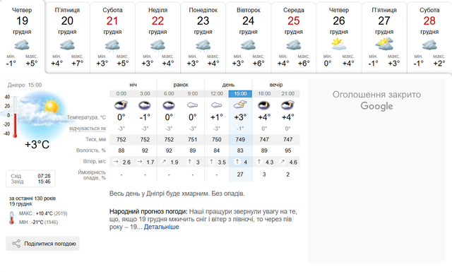

Горішні Плавні
Горі́шні Пла́вні (до 2016 року — Комсомо́льськ) — місто в Україні, адміністративний центр Горішньоплавнівської міської громади Кременчуцького району Полтавської області."
Харків
Харьків[2][3], лат. Zacharpolis[4][5][6]) — місто на північному сході України, на Слобожанщині, науковий центр України, адміністративний центр Харківської області. Друге за кількістю мешканців місто України з населенням 1 421 125 осіб на 01.01.2022[1]. Площа міста — 350 км²[7]. Разом із прилеглими містами й районами утворює Харківську агломерацію з людністю понад 2 млн осіб. Територія Харкова поділена на 9 адміністративних районів. Від 2020 року місто входить до складу Харківського району."
"
Дніпро
Дніпро́ (до 1796 і в 1802—1926 — Катеринослав, у 1796—1802 — Новоросійськ, у 1926—2016 — Дніпропетровськ
